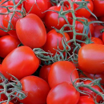

So what’s the difference between heirloom seeds and hybrid seeds, you might wonder? Well, let’s start with the heirlooms.
Heirloom seeds are pure seeds, that is, they are seeds from the original form of a particular species of tomato (this applies to any plant, by the way). So the heirloom seed you plant today is from it’s ancestor plant from 20, 50, even a hundred years ago, depending on where you source your seeds.
Hybrid seeds, on the other hand, are seeds that have been cross-bred with at least one other species of plant. Breeders often cross-breed plants to combine the characteristics of one type of tomato plant with the characteristics of another type.
Heirloom seeds are what's known as indeterminate, that means they will always be able to be pollinated, or bred, from a previous (parent) plant. Conversley, hybrid seeds cannot reproduce. They're known as determinate seeds because they grow, blossom and produce fruit only once. So if you choose heirloom seeds, you can harvest the seeds from this year’s yield for next year’s season. Find out how to do that here.
To find out more about a particular variety, click on any of the images in either section below.
As mentioned earlier, heirloom seeds are the pure breed of a particular type of tomato. As with anything we buy, there are advantages and disadvantages to every purchase decision we make.
The greatest advantage of growing from heirloom seeds is that you’ll get all of the original, intended, nutritional content offered from a pure-grown tomato.
A disadvantage for some might be the price point: heirlooms tend to cost more than hybrids. The reason for this is that heirloom seeds are considered higher quality, in terms of originality. Hybrid seeds, while they take a lot of effort, time and patience to reach the desired fruit, they tend to be looked upon as something not-quite-pure.
Remember though, you can only harvest the seeds from this year’s freshly-grown tomatoes for next year’s season if you grow heirloom seeds, which are indeterminate. Find out how to do that here.
As with anything in life, home-made is always best. Or in this case, home grown!
Deciding to grow your own food is one of the best decisions you can make. And now (early February) is the best time to get organised and plan where you would like to set up your grow area. As you can read in many of our articles on our blog, you can grow tomatoes almost anywhere – the main factor is plenty of light.
If light is an issue, then you can use grow lights. There are many brands and types available, but be sure to do your research first. We have a couple of products listed on our gardening tools page that may help you to find what you need.
I grew four varieties in 14 weeks!
Grow your favourite tomatoes easily without fuss
Tomato pests: learn what to do about them
The best way to harvest tomatoes (when and how)
Difference between heirlooms and hybrids
Best sellers and growers to buy seeds from